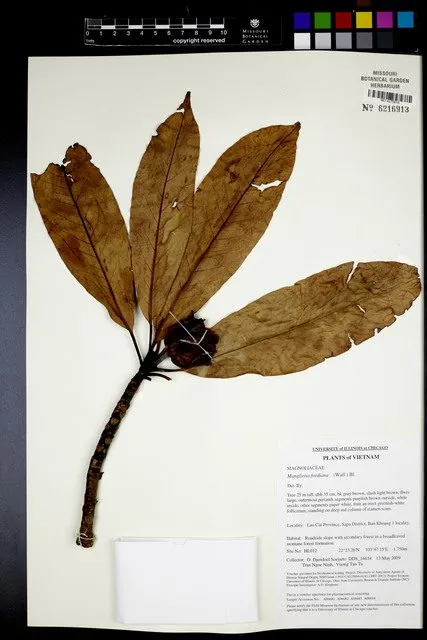

乔木 · 植物界
木莲 Manglietia fordiana

木兰科木莲属常绿乔木，花白色、肉质芳香，聚合果成熟时红艳，是南方常绿阔叶林中的优良观赏与用材树种。
- 分类
- 门被子植物门纲木兰纲目木兰目科木兰科属木莲属
- 栖息环境
- 海拔 500–1500 米的常绿阔叶林，喜温暖湿润、土壤肥沃
- 地理分布
- 中国广东、广西、云南、贵州、福建、湖南、江西等地
- 保护级别
- IUCN 暂无评估；中国特有种，野生种群因采伐而减少
物种志
木莲为常绿乔木，高可达 20 米，树皮灰色、平滑，小枝具环状托叶痕。叶片革质，倒披针形或狭倒卵形，长 10–20 厘米，上面深绿色有光泽。花单生枝顶，白色、肉质，直径 8–10 厘米，花被片 9 枚，芳香；聚合果卵状圆柱形，长 5–8 厘米，成熟时开裂，露出鲜红色种子。
本种为中国特有种，分布于广东、广西、云南、贵州、福建、湖南、江西等地，生于海拔 500–1500 米的常绿阔叶林中，喜温暖湿润、土壤肥沃的环境。它四季常青、花白如玉、果红似火，是华南优良的园林观赏树与行道树；木材纹理直、结构细，可供家具、建筑与胶合板。野生种群因天然林采伐而减少，目前多通过采种育苗用于绿化。
形态与习性
- 株高可达 20 米，树皮灰色平滑
- 花期5–6 月，花白色、肉质芳香
- 果期9–10 月，聚合果开裂露红种
- 光照幼树耐阴，成树喜光
- 水分喜湿润，适宜年降水量 1200 mm 以上
- 土壤深厚肥沃的酸性红壤或黄壤
- 主要用途园林观赏、行道树与家具用材
趣味知识
- 木莲的花洁白肥厚、形似莲花，因此得名“木莲”，其实它是木兰科的乔木。
- 它的聚合果成熟开裂后露出鲜红色种子，远远望去像缀在枝头的红珠。
- 木莲的小枝上有环状的托叶痕，是木兰科植物常见的识别特征。
- 它四季常绿、树冠浓密，在华南常被用作行道树与庭园树。